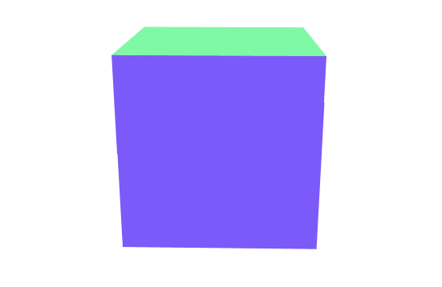

原文连接:https://www.cnblogs.com/ikumi/p/11329234.html
翻译：疯狂的技术宅，原文：https://blog.bitsrc.io/11-javascript-animation-libraries-for-2018-9d7ac93a2c59
当我想要在网上找一个简洁的 Javascript 动效库时，总是发现很多“推荐”的库都是缺乏持续维护的。
经过一番研究，我收集了 11 个最好的库，你可以用在自己的项目中。另外我还添加了一些有用但是缺少持续维护的库。
提示：可以用 Bit 来共享你的组件，用它们构建多个项目并与你的团队同步更改。不要重复造轮子。
这里有一些 React spinners（https://bitsrc.io/davidhu2000/react-spinners）：
上面的每个组件都可以在站点上找到并测试，可以直接用在自己的项目中。
使用纯CSS
在深入研究这些库之前，不要忘记还有纯 CSS。为什么？因为它是标准的，可以提高性能（GPU），能够提供很好的向后和向前兼容性，它可能是创建动态效果的最有效方式。
1. Three.js

得到超过 43K 的star，这个流行的库是在浏览器上创建 3D 动画的最好的一种方式，它用了 WebGL 。通过提供<canvas>、<svg>、CSS3D 和 WebGL 渲染器，该库可以让我们跨设备和浏览器创建丰富的交互式体验。该库于 2010 年 4 月首次推出，目前仍有近 1000 名参与者开发。
github： https://github.com/mrdoob/three.js/
2. Anime.js
超过20K的 star，Anime 是一个 JavaScript 动画库，可以处理 CSS 属性、单个 CSS 转换、SVG或任何DOM属性，以及 JavaScript 对象。这个库允许你链接多个动画属性、对多个实例进行同步、创建时间轴等。
github：https://github.com/juliangarnier/anime
3. Mo.js
这个库有 14K 的 star，是一个用于 Web 的动态图形工具集，有简单的声明性 API、跨设备兼容性和超过 1500 个单元测试。你可以在 DOME 或 SVG DOME 周围移动你创建的图形或创建唯一的 mo.js 对象。尽管文档有些欠缺，但是示例还是很丰富的，这里有mo.js 的 CSS 技巧的介绍（https://css-tricks.com/introduction-mo-js/）。
github：https://github.com/legomushroom/mojs
4. Velocity
查看codepen上的演示：https://codepen.io/hone/pen/azRzbe
有 15K 的 star，Velocity 是一个快速的 Javascript 动画引擎，有与jQuery的 $.animate(). 相同的API。它具有颜色动画、变换、循环、渐变、SVG支持和滚动。这是 Velocity 高性能引擎的细分（https://www.sitepoint.com/incredibly-fast-ui-animation-using-velocity-js/），这是使用该库的SVG动画的简介（https://davidwalsh.name/svg-animation）。
github：https://github.com/julianshapiro/velocity
5. Popmotion
有 14K 的star，这个库只有 11kb 的大小。它允许开发人员从动作创建动画和交互，动作是可以启动和停止的值的流，并使用CSS、SVG、React、three.js 和任何接受数字作为输入的 API 创建。
github：https://github.com/Popmotion/popmotion
6. Vivus
超过10K的star，Vivus 是一个零依赖 JavaScript 类，可以让你制作 SVG 动画，让它们具有能够被绘制的外观。有很多动画模版可以用，也可以创建自定义脚本来绘制 SVG。不妨亲自去 Vivus-instant （https://maxwellito.github.io/vivus-instant/）看一看实例。
github：https://github.com/maxwellito/vivus
7. GreenSock JS

GSAP 是一个 JavaScript 库，用于创建高性能、零依赖性、跨浏览器的动画，其声称有超过400万个网站在使用。 GSAP 非常灵活，可以与React、Vue、Angular 和 原生 JS 一起使用。 GSDevtools （https://greensock.com/gsdevtools）可以帮助你修改用 GSAP 构建的动画。
github：https://github.com/greensock/GreenSock-JS
8. Scroll Reveal
凭借15K 的star 和零依赖关系，该库为 Web 和移动浏览器提供了简单的滚动动画，能够以动画的方式显示滚动内容。它支持多种简洁的效果，甚至可以让你使用自然语言去定义动画。这是一个简短的SitePoint教程（https://www.sitepoint.com/revealing-elements-scrollreveal-js/）。
github：https://github.com/jlmakes/scrollreveal
9. Hover (CSS)
嗯，这是一个 CSS 库。获得了 20K 的 star，Hover 提供了 CSS3 的强大悬停效果，可用于链接、按钮、徽标、SVG 和图像等，能在CSS、Sass和LESS中使用。你可以找到要在自己的样式表中使用的效果并简单的复制粘贴，或者去引用样式表。
github：https://github.com/IanLunn/Hover
10. Kute.js
一个完全成熟的原生 JavaScript 动画引擎，具有跨浏览器动画的基本功能。不过重点还是代码质量、灵活性、性能和大小（其核心引擎只有17k 大小，压缩包仅 5.5k）。这里是演示（http://thednp.github.io/kute.js/performance.html）。该库也是可扩展的（http://thednp.github.io/kute.js/features.html#performance），因此你可以添加自己的功能。
github：https://github.com/thednp/kute.js/
11. Typed.js
这个有6K star 的库的基本功能是能让你以选定的速度创建一个打字动画。你还可以在页面上放置一个用户不可见的 <div> 标签并从中读取你要输出的内容，并能方便搜索引擎抓取。这个库非常流行而且充满新意。
github：https://github.com/luisvinicius167/ityped
另外还有iTyped：https://github.com/luisvinicius167/ityped
本人除了做前端开发，还在公众号写点文章，欢迎用共同兴趣爱好的朋友关注下，交个朋友噢！